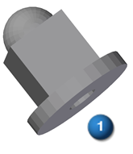
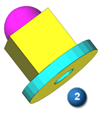
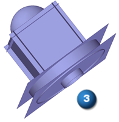
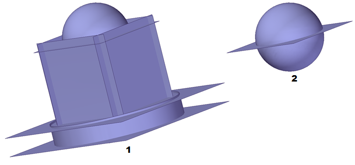
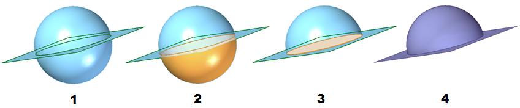
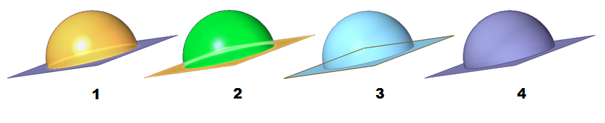
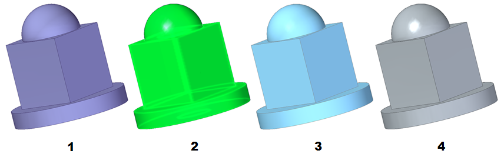

Reverse engineering example
This reverse engineering example demonstrates the process of creating a boolean model from a mesh model. It is an example of the Reverse Engineering workflow.
-
The commands on Reverse Engineering tab do not become available unless there is a mesh body (1) in the current document.
A mesh file document in form of a part or sheet metal file can be initiated by:
-
Create the initial document by opening an .stl file and identifying the appropriate document template from the list of part or sheet metal templates.
-
Already having a mesh body in an open document.

-
-
Clean up the mesh.
The mesh workflow generally proceeds by using the Reverse Engineering commands from left to right.
Depending on the source of the mesh body, more or less mesh preparation may have to be performed to get the best possible results. Mesh preparation consists of the following:
-
Delete unwanted portions of the mesh file so only the useful part of the mesh can be used to extract surfaces (see Delete Mesh command for more information).
-
Fill any holes that can adversely affect the ability to identify and extract surfaces (see Fill Holes command for more information) .
-
Smooth the mesh to reduce the amount of imperfections that are created when the source file was initially created. The size and amount of imperfections can adversely affect the quality of the extracted surfaces (see Smooth Mesh command for more information).
-
-
Identify regions of the mesh body (2) that will be used to extract the surfaces.
The color of a region is used to identify the type of geometric surface that will eventually be extracted. There are two ways to identify regions of the mesh body:
-
Automatic - Use the Automatic command to have Solid Edge attempt to identify different the regions of a mesh body. This command has an accuracy control to help you obtain the best possible results.
If this option is selected and all the surfaces are correctly defined, you can continue on to step 4 and extract the surfaces. If some mesh regions are not identified they can be identified manually. If some regions are not correctly identified, adjust the accuracy to try and obtain a better result. If regions still remain unidentified or incorrectly identified, use the Manual command to manually identify the missing or incorrect regions.
-
Manual - Use the Manual command to merge or divide regions, or to identify areas of the mesh that are yet to be defined as a region. When all the surfaces are correctly defined, you can continue on to step 4 and extract the surfaces. You do not have to paint a region a specific color according to the type of geometric surface you want to assign to the region. Any contiguous region of any color can be assigned to any geometric surface using the Fit command.

-
-
Extract the surfaces.
The objective here is to successfully extract (3) the correct geometric surfaces for each region of the mesh body based on the color.
Color
Region geometry

Planar

Cylindrical

Conical

Toroidal

Spherical

B spline/Freeform

Non Extractable
There are two command options used to define surface geometry assigned to a colored region. The Extract command automatically assigns a specific region geometry based on the specific color of a region, and the Fit command that allows the user to assign region geometry to any contiguous region of color.
After a surface has been extracted for as many regions as possible, use the surfacing tools to find the intersections,

-
Derive a solid model from the identified construction surfaces.
After the surfaces of a mesh file have been identified and extracted, the process of deriving a solid model consists of trimming the intersecting surfaces to size and stitching them together. This may including Extending surfaces that do not intersect, and creating missing surfaces to be able to enclose the entire model. The tools used to accomplish this are on the Surfaces group and Modify Surfaces group.
-
Trim the surfaces to size.
It is easier to trim surfaces to size easier by only showing the surfaces you are currently working with (2) instead of looking at all the extracted surfaces at one time (1). Uncheck unnecessary surfaces in the PathFinder to only view the surfaces you are trimming.

In this example the Intersect command is used to identify regions of the surfaces that are to be discarded. The sphere surface and the top planar surface are selected (1). The bottom region of the sphere is deleted (2) as well as the circular area of the planar surface (3) at the intersection of the sphere and the planar surface. These two surfaces now have edge conditions that allow them to be stitched together (4).

-
Stitch the surfaces together.
In this example the Stitched command is used to identify regions of the surfaces that are to be stitched together. Only regions that have matching edge conditions can be stitched together. The sphere surface (1) and the top planar surface (2) are selected. Select the Preview option to verify that the selected surfaces can successfully be stitched together (3). Select the Finish option to complete the action. The successfully stitched surfaces appear in the PathFinder in the Features collector.

-
Convert the stitched body to a model body.
Continue to trim and stitch the surfaces together until all of the surfaces (1) form a complete construction body. In the final stitch operation all remaining surfaces and stitched features are selected (2). When the Preview option is selected and the surfaces successfully form a body the model turns blue (3). The completed construction body (4) is converted to a model body using the Attach option that is accessed by right-clicking on the Stitched feature in the PathFinder. Right-click on the Solid Body design body in the PathFinder and select the Toggle Design/Construction option to toggle the construction body to a fully manageable model body.

-
How do I
Create a sketch from a section curveLearn more
Reverse Engineering workflowLook up more details
Delete Mesh commandFill Holes command
Smooth Mesh command
Align command
Align command bar
Remesh command
Remesh Options dialog box
Automatic regions command
Manual regions command
Extract surfaces command
Fit surfaces command
Deviation Analysis command
Deviation Analysis command bar
Deviation Analysis Settings dialog box
Section Sketches command
Section Sketches command bar
Section Sketches Options dialog box
Related Topics
Align a mesh body to a coordinate systemAnalyze the deviation between two objects